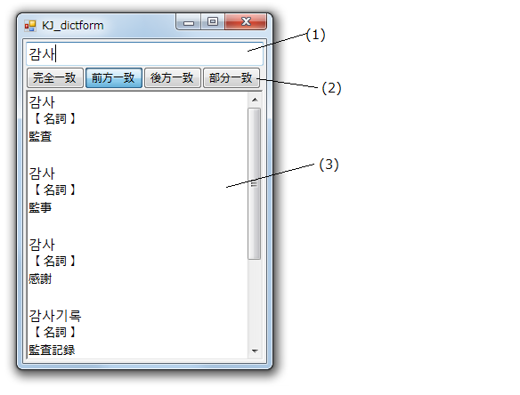
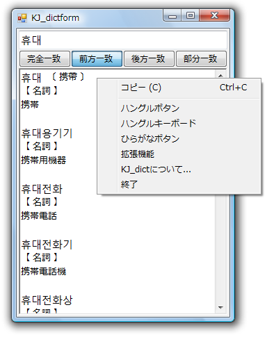

(1) 検索する語を入力します。語を入力すると自動で検索を行います。
(2) 検索の種別。
完全一致、前方一致、後方一致、部分一致 を選択。デフォルトは「前方一致」。
(3) 結果の表示エリアです。
・ひらがな、漢字、ハングルだけでなくアルファベットでも検索できます。
・キー入力と同時にインクリメンタルに検索していきます。
・プログラムを終了させる場合はウィンドウ枠
右上の赤いバッテン(×)を押してください。
・Back space ： 最後の1文字を消す
・Esc ： 入力文字をすべてクリア
プログラム上で「右クリック」するとメニューがでます。

上から順に以下の機能です。
(1) コピーまたは貼り付け ： 文字列をコピーまたは貼り付けできる場合に現れます。
(2) ハングルボタン ： ハングル入力のための簡易IME(ボタン式)
(3) ハングルキーボード ： ハングル入力のためのIME(キーボード入力)
(4) ひらがなボタン ： ひらがな入力のための簡易IME(ボタン式)
(5) 拡張機能 ： 拡張機能の設定用画面の表示
(6) KJ_dictについて ： バージョン等，このプログラムに関する情報表示
(7) 終了 ： プログラムを終わります。右上の赤いバッテン(×)と同じです。
ハングルボタンの使い方
ひらがなボタンの使い方
ハングルキーボードの使い方
拡張機能の詳しい説明
拡張メニューでの設定，フォームサイズなどを記憶します。
設定は次のファイルに保存します。
KJ_dictform_setting.xml
もし，初期状態に戻したい場合は，KJ_dictform_setting.xmlを削除してください。